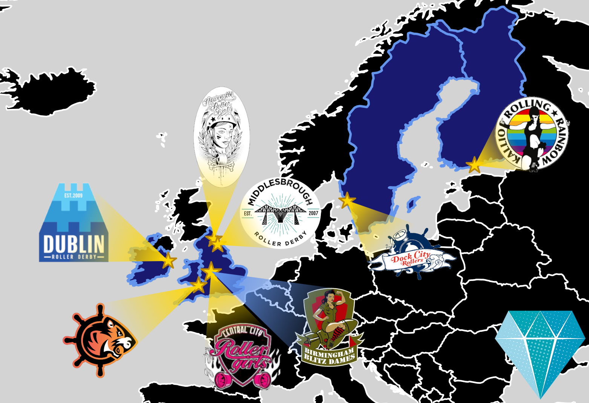

Europe's First Continental Cup: the UK's next International Derby fixture in 2018
By any account, 2018 has been a very good year for Roller Derby's international profile, in both Europe and the UK. From the third Roller Derby World Cup in Manchester this February, and the third Men's Roller Derby World Cup in Barcelona a few months later, we've gone on to host an MRDA Playoffs, in Halifax/hosted by Manchester Roller Derby, and a WFTDA Playoffs, in A Coruña.
The pendulum is, inevitably, swinging back again from Spain to the UK, with the last event in this sequence: the first ever European WFTDA Continental Cup, bringing up the rear in this inaugural year for the new format.
Like the MRDA Playoffs (hosted by Manchester, in Halifax), this is hosted by Birmingham Blitz Dames, but physically located in Telford... but the hosts have done a lot to make the brand of the tournament their own. The distinctive diamond logo:
has both a general connection to Birmingham's jewellery industry, and to the Blitz Dames themselves - and even references their ex-skater, goldsmith Isabella Day, who made the trophy for the tournament!

The new Continental Cups framework is a response to the increasing spread of Roller Derby, and particularly the increasingly global membership of WFTDA. With more than 400 member leagues, an ever decreasing fraction of travel teams can hope to compete in a WFTDA Playoffs (and travel costs become increasingly prohibitive if you just extend the cut-off for Playoffs, or extend the old Division 2). Regional "Continental Cups" provide a WFTDA-certified tournament, for every region with enough teams, at a level just below that of Playoffs - but with much less travel costs. (Next year, there will also be a set of regional "Development Cups", providing a WFTDA-certified tournament option for regions who aren't competitive at the old "D2" level, with guest "seed" teams from more "connected" regions to help improve ranking accuracy.)
Europe's Continental Cup, then, has a familiar set of teams (and countries) represented (order from WFTDA announcement):
- Kallio Rolling Rainbow (Finland)
- Dublin Roller Derby (Ireland)
- Dock City Rollers (Sweden)
- Tiger Bay Brawlers (Wales)
- Central City Roller Derby (England)
- Birmingham Blitz Dames (England)
- Newcastle Roller Girls (England)
- Middlesbrough Roller Derby (England)
Despite, or perhaps causing, of the possibility of so many upsets and ranking disparities, the European Continental Cup should continue the example of the two North American CCs, in having a higher than "usual" number of close bouts, despite the tendency of elimination tournaments to start with a round of blowouts.
The bracket is available here: BRACKET PDF (note for those not in the UK - this event is on the weekend that the UK changes over from Daylight Savings Time, so be careful checking timings for the Sunday, in particular).
 Geographical distribution of European Officials at the ECC! Stars may represent more than one official from a given location.
Geographical distribution of European Officials at the ECC! Stars may represent more than one official from a given location.
As well as for the competition, the Continental Cup is also a great chance for more representation for our highly skilled European Officiating community. Just at the Tournament and Crew Head levels, we have officials from Karlsruhe, Newcastle, Dublin, Nottingham, Paris/Lutece, London/Southern Discomfort, (and Michigan...) - including all of the other crew positions adds (deep breath) Amsterdam, Antwerp, Bath, Belfast, Birmingham, Brussels, Cambridge, Cardiff, Chelmsford, Copenhagen, Darmstadt, Devon, Dresden, Dundee, Essex, Falkirk, Frankfurt, Gothenburg, Kallio/Helsinki, Manchester, Metz, Mons, Nantes, Northampton, Oxford, Riems, Ruhrpott, Southend, Southampton, Vicenza, Vienna, Wiltshire, Wuppertal, (and Rochester, NY; Monterrey County, CA; St Louis, MO; Boston, MA; USA... and Adelaide, SA, Australia)! Just as with the other international events in Europe this year, this kind of exposure, and opportunity to both officiate at a high level, and meet up with a wider-flung segment of the Derby Community is fantastic for Europe.
That's not all, as there's also fantastic line-up of (mostly...) European announcers, from Head Announcer Biertrix (Rainy City Roller Derby), through a host of UK announcers from London through Manchester to Durham and Newcastle; and from Germany, Denmark, as well as the USA.
Finally, as with all WFTDA post-season events this year, there will be a genuine chance for all members of the community (WFTDA-members or no) to connect with WFTDA Membership via the co-hosted "WFTDA World Summit Satellite" event. We're very impressed by WFTDA's increased commitment to listening to the voices of the whole community, and would encourage the community to also make use of these opportunities in return: listening should be rewarded with dialogue. (On that note, WFTDA are also surveying every league which does derby and are not WFTDA-members - regardless of their gender policy etc - and we'd encourage everyone eligible to respond to this too, here: WFTDA.org/surveys )
The European Continental Cup will run from October 27th to October 28th at The International Centre, Telford.
WFTDA Continental Cup page: https://wftda.com/events/wftda-continental-cups/ Facebook Event for European Continental Cup: https://www.facebook.com/events/130422437830313/